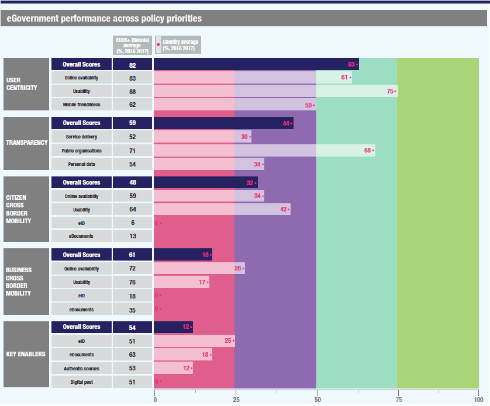

Digital Government Factsheet 2019
Romania
Table of Contents
Digital Government Highlights 6
Digital Government Political Communications 7
Digital Government Legislation 9
Digital Government Governance 15
Digital Government Infrastructure 19
Digital Government Services for Citizens 22
Digital Government Services for Businesses 28
Country Profile
Basic data
Population: 19 523 621 (2018)
GDP at market prices: 940 477.5 million RON (197 743.41 million EUR) (2018)
GDP per inhabitant in PPS (Purchasing Power Standard EU 28=100): 63 (2017)
GDP growth rate: 4.1% (2018)
Inflation rate: 4.1% (2018)
Unemployment rate: 3.9% (2018)
General government gross debt (Percentage of GDP): 35.1% (2017)
General government deficit/surplus (Percentage of GDP): -2.9% (2017)
Area: 238 397 km2
Capital city: Bucharest
Currency: Ron
Source: Eurostat (last update 15 March 2019)
Digital Government Indicators
The following graphs present data for the latest eGovernment Indicators for Romania compared to the EU average. Statistical indicators in this section reflect those of Eurostat at the time the Edition is being prepared.
Percentage of individuals using the internet for interacting with public authorities in Romania | Percentage of individuals using the internet for obtaining information from public authorities in Romania | ||
Percentage of individuals using the internet for downloading official forms from public authorities in Romania | Percentage of individuals using the internet for sending filled forms to public authorities in Romania | ||
Digital Government State of Play
The graph below is the result of the latest eGovernment Benchmark report, which monitors the development of eGovernment in Europe, based on specific indicators. These indicators are clustered within four main top-level benchmarks:
- User Centricity – indicates to what extent (information about) a service is provided online and how this is perceived.
- Transparency – indicates to what extent governments are transparent regarding: i) their own responsibilities and performance, ii) the process of service delivery and iii) personal data involved.
- Cross-Border Mobility – indicates to what extent EU citizens and businesses can use online services in another country.
- Key Enablers – indicates the extent to which five technical pre-conditions are available online. There are: Identification (eID), Electronic documents (eDocuments), Authoritative Sources, and Digital Post. Digital Post refers to the possibility that governments communicate electronically-only with citizens or entrepreneurs through e.g. personal mailboxes or other digital mail solutions.
These top-level benchmarks are measured using a life-events (e.g. mystery shopping) approach. Eight life events are included in the overall eGovernment performance score. Four of these life events were measured in 2013, 2015 and 2017 and the other four were measured in 2012, 2014, 2016, and again in 2018. The life events measured in 2017 were Regular business operations, Moving, Owning and driving a car and Starting a small claims procedure. The life events measured in 2018 are Business start-up, Losing and finding a job, Family life and Studying.

Source: eGovernment Benchmark Report 2018 Country Factsheet
Digital Government Highlights
Digital Government Political Communications
No new political communications were adopted in the reporting year.
Digital Government Legislation
- In compliance with the eIDAS Regulation, Romania passed a specific law on eID and trust services for electronic transactions. The law establishes the legal regime of the electronic signature and of the law documents in electronic form, as well as the conditions for the provision of reliable services.
- The government adopted the draft Emergency Ordinance on the accessibility of web sites and mobile applications of public sector bodies, which aimed to establish requirements for the accessibility of websites and mobile applications of public sector bodies to enable them to be more easily accessed by users, especially by the elderly and disabled.
Digital Government Governance
Digital Government Infrastructure
Digital Government Services
No new digital government services were developed in the reporting year.
Digital Government Political Communications
Specific political communications on digital government
- Field of Action 1 - eGovernment, Interoperability, Cyber Security, Cloud Computing, Open Data, Big Data and Social Media increase efficiency and reduce the public sector costs in Romania by having a modern administration.
- Field of Action 2 – ICT in Education, Health, Culture and eInclusion support at a sectorial level to ensure ICT investments to create a positive impact in the social context.
- Field of Action 3 - eCommerce, Research & Development and Innovation in ICT builds on the comparative advantages of regional Romania and supports economic growth in the private sector.
- Field of Action 4 – Broadband and Digital Services Infrastructure ensures social inclusion and enables benefits across all other fields of actions.
Key enablers
Access to public information
No political communication was adopted in this field to date.
eID and Trust Services
No political communication was adopted in this field to date.
Security aspects related to digital government
National Cyber Security Strategy
The strategy set the following objectives:
- Adapt the regulatory and institutional framework to cyberspace threat dynamics;
- Establish and implement security profiles and minimum requirements for national cyber infrastructures, relevant in terms of the proper functionality of the critical infrastructures;
- Ensure the resilience of cyber infrastructure;
- Ensure security through understanding, preventing and fighting vulnerabilities, risks and threats to the cyber security of Romania;
- Take advantage of the opportunities to promote the national interests, values and objective in cyberspace;
- Promote and develop cooperation between public and private sectors at national and international level in the field of cyber security;
- Develop a security culture by raising awareness of the population concerning the vulnerabilities, risks and threats originating from cyberspace and the need to ensure protection of their information systems;
- Active participation in initiatives of international organisations which Romania is part of in defining and establishing a set of international confidence-building measures concerning use of cyberspace.
The strategy was approved by Government Decision no. 271/2013.
Interconnection of base registries
No political communication was adopted in this field to date.
eProcurement
No political communication was adopted in this field to date.
Domain-specific political communications
Public policy in the field of eCommerce
The document provided an extensive overview of the state-of-play of eCommerce development and outlined the main directions and strategic goals for the future.
The strategy was accompanied by an Action Plan, which detailed a list of actions and deadlines for each of the objectives of the strategy.
- Stimulating and coherent regulatory framework for eCommerce;
- Informing suppliers and online service providers about eCommerce solutions;
- Strengthening the institutional framework for eCommerce solutions.
Interoperability
No political communication was adopted in this field to date.
Emerging technologies
No political communication was adopted in this field to date.
Digital Government Legislation
Specific legislation on digital government
Government Decision on the organisation and operation of Electronic Point of Single Contact
Decision no. 922/2010, which aimed at regulating the operation of the Electronic Point of Single Contact, was published on 15 September 2010. It was based on Law no. 49/2009 concerning freedom of establishment and provision of services by electronic means in Romania. The Electronic Point of Single Contact portal (electronic PCU), was designed and established to facilitate online interaction between public institutions and service providers in Romania. By publishing information and useful links, facilitating online obtainment of permits, approvals and certificates needed for market penetration, the procedures for both domestic and foreign businesses became easier and more transparent.
Emergency Ordinance no. 41/2016
The ordinance, issued in July 2016, introduced the obligation for public authorities, on request from citizens, to accept documents in electronic format and reuse any personal data previously delivered to the public administration. The ordinance stipulated new rules concerning source code for ICT systems developed under an eProcurement contract. The ordinance also established a national CIO in partnership with the Ministry of Communication and Information Society and the rest of government.
Key enablers
Access to public information
Government Ordinance on website accessibility of public sector institutions
The Romanian government adopted on 21 December 2018 the draft Emergency Ordinance on the accessibility of web sites and mobile applications of public sector bodies.
This regulatory act aimed to establish requirements for the accessibility of websites and mobile applications of public sector bodies to enable them to be more easily accessed by users, especially by the elderly and disabled.
In this way, citizens will be able to benefit from wider access to public sector services through web sites and mobile applications to receive services and information that will make their daily lives easier and easier to exercise their rights at national and European Union level, in particular the right to free movement and the right to establish and provide services.
Law on Free Access to Information of Public Interest
Law no. 544/2001 was initially published in October 2001. However, it should be noted that methodological norms for applying the law were approved by Government Decision no. 123/2002 on 7 February 2002 and subsequently published on 8 March 2002.
The regulations stated that "free and unrestrained access to information of public interest shall be the rule and limitation of access shall be the exemption." It allowed any person to request information from public authorities and state companies. The authorities had to respond within 10 days. Public employees could be disciplined for refusing to disclose information. The authorities were obliged to publish a wide variety of basic information on their structures and activities including their register of 'documents of public interest'.
Romania has notified full transposition of the Directive on the re-use of public sector information (2003/98/EC) as realised by Law no. 109, published on 5 May 2007.
Government Decision no. 1085/2003
The aim of this Government Decision was to implement certain provisions of Law no. 161/2003, regarding measures for ensuring transparency in the exercise of public dignities and functions in the business environment, thus pursuing the prevention and punishment of corruption, related to the implementation of the National Electronic System (NES). Furthermore, public administration authorities were obliged to register in the NES.
Law on the archiving of documents in electronic form
Adopted in May 2007, the law no. 135/2007 established the legal regime applicable to the creation, preservation, consultation and use of administration's documents to be archived or stored in an electronic format. Processing operations of archival documents in electronic form had to be in compliance with the National Archives Law 16/1996, with subsequent amendments, and regulations on conservation, access and data protection to both public and private domains. This Law was supplemented in June 2009 by Order no. 493/2009 issued by the Ministry of Communications and Information Technology which clarified all technical and methodological applications.
eID and Trust Services
Law on eID and trust services for electronic transactions
In compliance with the eIDAS Regulation, Romania passed a specific law on eID and trust services for electronic transactions. The law established the legal regime of the electronic signature and of legal documents in electronic form, as well as the conditions for the provision of reliable services.
Security aspects related to digital government
Law no. 677/2001 allowed individuals to access and correct personal information held by public or private bodies. It was complemented by recent additions such as Law no. 55, (OJ. no. 244/23.03.2005), which ratified the Additional Protocol to The Convention for the Protection of Individuals with regard to automatic processing of personal data, referring to control authorities and cross-border data flow. Furthermore, a National Supervisory Authority for Personal Data Processing was established in 2005 by Law no. 102/2005 (O.J. no. 391/09.05.2005). All data protection files previously kept by the Ombudsman were handed over to the Authority, which supervised and controlled the legality of personal data processing under Law no. 677/2001.
This law on the processing of personal data and the protection of privacy in the electronic communications sector replaced Law no. 676 of 21 November 2001 on the Processing of Personal Data and the Protection of Privacy in the Telecommunications Sector. It closely followed Directive 2002/58/EC on personal data processing and privacy protection in the electronic communications sector.
Draft Law on the minimum-security measures of information systems in Public Administration
The law was created for the protection of the public administration’s information systems. Security actions were formed by the framing and descriptions of the organisational, physical and IT security measures for data protection.
Interconnection of base registries
Draft Law on National Electronic Registers
The law ensured the coverage, constitution, administration and operations of the National Electronic Registers (REN), aiming at reducing the duplication of the data used by the public sector, preventing the repeated collection of information from persons or bodies (the once-only principle) and ensuring the reliability and safety of the data. The law was mainly intended for individuals and institutions involved in setting strategies for the Information Society, as well as in the design or operation of electronic services. The National Electronic Registers were defined by law as “collections of information and data originated from social entities, in electronic format, considered as authentic sources of information”. The National Electronic Registers are considered to be: Population Registry, Tax Registry, Trade Registry, Cadastral and Land Registry (territorial Identification, addresses and properties), Vehicle Registry, Social Insurance Registry, and Support Registry for students.
eProcurement
Adopted in June 2006, this ordinance revoked all previous acts containing provisions on public procurement and merged the two EC eProcurement directives (2004/17/EC and 2004/18/EC) into a single act. The legal framework for public acquisitions was finalised in 2016, leading to an update of the SEAP, the national procurement portal.
Law approving the Government Emergency Ordinance on the awarding of public procurement contracts, public works concession contracts and service concession contracts
This law sets forth the approval of the Government Emergency Ordinance no. 34/2006 regarding the award of public procurement contracts, public works concession contracts and service concession contracts, and introduces amendments and supplements.
Law on Public Procurement
The new law on Public Procurement was published in the Official Gazette No. 390 on 23 May 2016. In addition to laying out new rules for the application of provisions concerning the award of public procurement contracts, the law also included an update of the national procurement portal.
Decision on the approval of Application Norms for the award of public contracts by electronic means from the Government Emergency Ordinance no. 34/2006 concerning the award of public contracts, public work concession contracts and services concession contracts. It focused mainly on the application of Art. 21 (A) of Government Emergency Ordinance no. 34/2006 on public procurement contracts, in order to make available technical facilities for contracting authorities and apply fully electronic, open tendering procedures.
Decision on the approval of the Application Norms for the provisions concerning the award of the public procurement contracts using electronic means, according to the G.E.O. no. 34/2006, regarding the award of the public procurement contracts, public works concession contracts and service concession contracts. This decision was supplemented by Government Decision no. 1337/2006. The Decision mainly emphasised the approval of rules for implementing provisions represented in the Government Emergency Ordinance no. 34/2006.
The Ordinance on the modification and completion of the Government Emergency Ordinance no. 34/2006 on the award of the public procurement contracts, public works concession contracts and service concession contracts was published on 4 October 2007. It introduced important changes in the existing eProcurement legal framework.
The main purpose of this Decision was to amend and supplement norms for the application of provisions regarding the award of procurement contracts electronically published by the Government Emergency Ordinance no. 34/2006 concerning the award of public contracts, public work concession contracts and services concession contracts approved by Government Decision no. 1660/2006. This legal act was the legislative expression of the Manchester Declaration of 2005 as agreed by ministers in charge for eGovernment politics from EU Member States, candidate and EFTA countries. The declaration set out a new strategic direction for European eGovernment up to 2010, with the aim to include every citizen, business and government in the social and economic benefits that IT-enabled public services can deliver.
eInvoicing Legislation
The Fiscal Code from 2015, in force from 1 January 2016, and its implementing Rules approved by Law 227/2015 governed the electronic invoicing in Romania.
Additional legislation may apply if electronic signature or electronic archiving is used in the process of electronic invoicing:
- Law 455/2001 on electronic signature;
- Law 135/2007 on electronic archiving of documents.
The Ministry of Public Finance is the responsible authority for eInvoicing in Romania.
Domain-specific legislation
This law, adopted in June 2002, and modified in May 2006 by Law no. 121/2006, transposed the main provisions of Directive 2000/31/EC on eCommerce. It defines eCommerce and other basic concepts, such as electronic messaging or the exchange of data over the Internet. The main points addressed included: free movement of information society services, contracts concluded by electronic means, commercial communications through electronic means and ePayments forgery. Furthermore, it stipulated severe penalties for the possession of equipment for falsifying electronic payment instruments. It also established who and how one may start an eBusiness registered in Romania.
Law on electronic registration of commercial operations
This Act established the legal regime of electronic documents containing data on economic transactions of sale or exchange of goods or services between persons issuing and receiving invoices, tax bills or receipts in electronic form. It was supplemented by statutory provisions concerning the conclusion, validity and effects of legal acts, as well as those provided by Law no. 571/2003 as amended and additional normative acts.
This Law laid down the provisions to regulate the issuance and use of ePayment instruments throughout Romania and to monitor the activities of such instruments, as well as the conditions to be met by providers, users and other institutions involved in the process.
Order on the procedure for approval of payment instruments with remote access
This legislative initiative, published on 19 July 2007, applied to payment transactions in internet banking, home banking or mobile banking. The aim was to create an environment in which internet banking transactions could be accomplished with confidentiality, protection of personal data, safety and authenticity.
Government Ordinance on the collection of local taxes by electronic means
This Ordinance sets, as an obligation for all municipalities and cities in Romania, the deployment of electronic systems for local tax collection. These systems provide citizens with access to the relevant information on local taxes and offer a quick and comfortable solution to pay local debts.
Law on the electronic payment of local taxes
This Law stipulates that local public administration authorities have to take all the necessary measures to inform citizens on electronic payment of local taxes.
This Law comprises stipulations concerning transparency in information management and electronic public services’ administration by demanding that financial statements of public officials are published online. It includes provisions for preventing and fighting cybercrime.
Interoperability
Draft Law on National Interoperability Framework
The law establishes the rights and obligations of the operators of computer systems used to offer electronic public services. The law sets the principles and goals to be achieved with the transposition of the interoperability framework and the authorities responsible for its implementation. It also settles the rules for the National System of Authentication (SUNA), which allows secure authentication of public services´ users, and the National Depositary of Documents (DND), an information system that allows for secure storage of individuals and legal entities documents. The law specifies the technical and methodological rules concerning the National Interoperability Framework.
The law states that within 90 days of the publication of technical and methodological rules, the operators of computer systems who provide electronic public services together with the institutions responsible for managing the national electronic registers, will have to implement the necessary actions to accept and process requests submitted by citizens through the National Electronic System. They will also accept and process the requests received from other computer systems through which public services are available. The automatic acquisition of information that already exists within the national electronic registries has to be ensured, in order to eliminate repeated introduction of data, thus insinuating the implementation of the once-only principle. Failure to comply with established law will lead to a fine.
Emerging technologies
Under the republished Article 108 of the Constitution of Romania and Article 42 of Law no. 90/2001, on the organisation and functioning of the Romanian Government and ministries, the Government of Romania adopted on 25 February 2010 Decision no. 139. It established the National Centre for Supercomputing (CNS) as a specialised body of central public administration, a legal entity subordinated to the Ministry of Communications and Information Society, which aims to modernise the services and information systems of the public administration.
Digital Government Governance
Policy
Ministry of Communications and Information Society (MCSI)
The MCSI has executive control over eGovernment. This dedicated ministry is the main policy and strategy provider for the domain and serves as the specialised body of central Public Administration in the ICT sector.
Alexandru Petrescu Minister of Communications and Information Society Contact details: Ministry of Communications and Information Society 14 Libertatii Avenue, District 5, CP 050706, Bucharest Tel.: +40 21 400 11 90 Fax: +40 21 311 41 31 |
Ministry for Internal Affairs (MAI)
Political responsibility for eGovernment lies within the MAI, which contributes to eGovernment policy and drafts strategic documents on Public Administration.
Coordination
Ministry of Communications and Information Society (MCSI)
Corneliu Mănescu Director General for Information Society Contact details: Ministry of Communications and Information Society 14 Libertatii Avenue District 5, CP 050706, Bucharest Tel.: +40 21 311 41 50 Fax: +40 21 311 41 03 E-mail: corneliu.manescu@comunicatii.gov.ro Source: http://www.comunicatii.gov.ro/ | |
Monica Chiffa Head of Digital Single Market Unit Contact Details: Ministry of Communications and Information Society 14 Libertatii Avenue District 5, CP 050706, Bucharest Tel.: +40 21 311 41 40 Fax: +40 21 311 41 40 E-mail: monica.chiffa@comunicatii.gov.ro Source: http://www.comunicatii.gov.ro/ |
National Institute for Research and Development in Informatics (ICI)
Chancellery of the Prime Minister (CPM)
According to paragraph 4, art. 4 of the Government Emergency Ordinance no. 464/2016 on the attributions, organisation and functioning of the Chancellery of the Prime Minister, it coordinates information technology sector at the level of the whole public administration, including eGovernment projects and open standards.
Implementation
Ministry of Communications and Information Society (MCSI)
MCSI is responsible for the implementation of policies and strategies, together with the subordinate agencies and departments in the eGovernment domain. Furthermore, it implements the Government's ICT policy.
Base registry coordination
Ministry of Internal Affairs
The Ministry of Internal Affairs oversees the management of the Population Registry, providing information on the personal data for natural and legal persons.
National Trade Register Office, Ministry of Justice
The National Trade Register Office manages the trade registry for business and legal entities.
National Agency for Cadastre and Land Registration (ANCPI)
The agency is in charge of maintaining the land registry for real estate and land buildings.
National Agency of Fiscal Administration
The agency manages the tax registry.
Support
National Authority for Management and Regulation in Communications (ANCOM)
Audit
The Court of Accounts exerts control over the State and public sector expenditure, the management of the public and private patrimonies of the State and of territorial administrative units.
Data Protection
National Supervisory Authority for Personal Data Processing
This independent public body supervises and controls the legality of personal data processing falling under the personal data protection legislation. Its competences are those of a control institution, including sanctioning, in case legal provisions are infringed by the personal data processors as a result of self-notification, or based on complaints filed by the person whose rights are infringed.
This public institution under the coordination of the Ministry of Communications and Information Society was established for research, development and expertise in the field of cyber security. It is a specialised organisation responsible for preventing, analysing, identifying and reacting to cyber incidents. CERT is responsible for elaborating and distributing public politics for prevention and counteracting the incidents that occur within national cyber infrastructures.
Subnational (federal, regional and local)
Policy
No responsible organisations were reported to date.
Coordination
Ministry for Internal Affairs (MAI)
Regional and local authorities are subordinate to the MAI which, by Law no. 161/2003, coordinates eAdministration.
Implementation
Ministry of Communications and Information Society (MCSI)
The MCSI implements the 'Sole-Central Permit' system and its administration, a one-stop service for issuing all certificates required for a building permit operated by certain Local Councils. It is expected that more local actors will emerge in the future thanks to the further development of these regions.
Support
Audit
No responsible organisations were reported to date.
Digital Government Infrastructure
Portals
The portal serves as a one-stop shop to central and local public services and forms online, while also incorporating a transactional platform. Users can register for interactive and transactional services. Links to all the departments of central and local government are also included in the portal, as well as information regarding the legislation and regulations related to the interaction with the Public Administration. Moreover, a Unique Form Service system gathers nine eServices for businesses. The eServices are designed for large contributors and provide unified access for eGovernment services.
Electronic Point of Single Contact
The platform was updated and relaunched in 2016. The new platform now allows ministries to send documents and requests to the citizens, so that citizens do not have to go to the counter to submit them physically. The platform now contains a full set of forms, procedures and legislation so that citizens are aware of the process of any public procedure or service.
Networks
Local Communities Electronic Networks (LCENs)
Data Exchange
No particular infrastructure in this field was reported to date.
eID and Trust Services
Integrated National System for the inclusion and update of information related to the personal records
- Issue various certificates, like identity card, civil status certificate, passport, car registration and deregistration online;
- Communicate to various public institutions and authorities of the identity data of certain persons;
- Identify the changes occurring in the records of persons on the basis of data updates;
- Provide Local Registry data for evidence of people, at the request of central and local institutions and authorities.
eProcurement
This system simplifies procedures for both suppliers and purchasing agencies. The system is the national single point for the transmission of public procurement notices to the EU Official Journal (as OJS eSender). Furthermore, it offers interactive and transactional services dedicated to sustaining 20% of the total amount of public acquisition.
eInvoicing
ePayment
The Virtual Payment Office (Ghiseul Virtual de Plati) project aims at facilitating citizens’ interaction with the Public Administration by allowing for electronic payment of fines, taxes and other fiscal obligations via bank cards. New types of payments towards the State were added into the system, such as tax obligations related to salary income (where appropriate) and income from: commercial activities; liberal professions; intellectual property rights; concession of the use of goods; transfer of securities; term buying/selling operations of the currency on a contractual basis; agricultural activities; and real estate property transfer.
National Information System for Tax Payment Online
With Government Decision 1235/2010 of 6 December 2010, the Government, in co-operation with the National Centre for the Management of Information Society (CNMSI), established an ePayment platform to be used with credit cards. Its main purpose is the elimination of queues at taxation offices, thus enabling citizens, businesses and the Public Administration to save both time and costs.
Knowledge Management
No particular infrastructure in this field was reported to date.
Cross-border platforms
No particular infrastructure in this field was reported to date.
Base registries
Data Distributor
- Uptime of 99.9%;
- Higher security than the distributed solutions;
- Lower operating and support costs for the exhibition of basic data and support;
- Uniform technical interfaces;
- Uniform data modelling principles.
The base registries keep the basic data and provide the means to access that data. The authorities responsible for the base registries define the data delivery specifications, within which the frequency of the update and synchronisation specifics is defined. These authorities are also responsible for the collection, reporting and the maintenance of the data.
The Data Distributor replicates the basic data coming from the base registries using the improved data model described in the previous chapter. By doing this, the Data Distributor avoids duplicates and optimises the search through links between the main entities. This replication of information implies that the Data Distributor is also a redundant platform, which improves and increases the availability of information.
National Electronic System (NES)
The draft Law on National Interoperability Framework includes technical specifications to achieve interoperability between systems, products, software, application or service accessible through the National Electronic System (NES) - a common platform for providing several eServices to businesses and citizens via a portal.
Digital Government Services for Citizens
The information in this section presents an overview of the basic public services provided to the citizens. These were identified taking inspiration from Your Europe, a website which aims to help citizens do things in other European countries – avoiding unnecessary inconvenience and red tape in regard to moving, living, studying, working, shopping or simply travelling abroad. However, the categories used in this factsheet aim to collect a broader range of information, focusing therefore not only on cross-border services, but also on national services.
The groups of services for citizens are as follows:
- Travel
- Work and retirement
- Vehicles
- Residence formalities
- Education and youth
- Health
- Family
- Consumers
Document you need for travel in Europe | |
Passport | |
Responsibility: | Central Government, Ministry of Internal Affairs, Romanian National Police |
Website: | http://www.pasapoarte.mai.gov.ro/; http://www.mai.gov.ro/ (section Utile) |
Description: | Online information and forms to begin the process of obtaining or renewing a passport. This service is to become part of the National Person Identity System, which is currently being developed. |
Working abroad, finding a job abroad, retiring abroad | |
Job search services by labour offices | |
Responsibility: | Central Government, Ministry of Labour, Family, Social Protection and Elderly, Electronic Service for Job Mediation (Serviciul Electronic de Mediere a Muncii, SEMM) |
Website: | |
Description: | The online job search operates under the National Agency for Occupation and Labour (ANOFM). |
Professional qualifications | |
Legal information system (incl. information on the regulated professions) | |
Responsibility: | The Chamber of Deputies |
Website: | |
Description: | The Internet database contains normative, individual and international acts. |
Taxes | |
Income taxes: declaration, notification of assessment | |
Responsibility: | Central Government, Ministry of Public Finance |
Website: | |
Description: | Forms may be signed electronically according to the legislation in force and sent to the relevant agencies through electronic means that guarantee delivery. Payment of local taxes via the Internet is currently used in 50% of Romanian municipalities. |
Online Tax Payments | |
Responsibility: | National Agency of Fiscal Administration (NAFA) |
Website: | |
Description: | Individual tax payers can make online payment of taxes such as local taxes, fines, and various income taxes. |
VAT refunds and excise duties | |
Responsibility: | Central Government, Ministry of Public Finance |
Website: | |
Description: | Online submission of VAT forms is available as form 'Deduction regarding VAT' – Declaration no. 300, for large contributors and is supported by the eGovernment portal 'e-guvernare'. The system was extended to all contributors through the web page of the National Agency for Fiscal Administration section on electronic declaration. |
Driving Licence | |
Driver’s licence | |
Responsibility: | Central Government, Ministry of Internal Affairs |
Website: | http://www.mai.gov.ro/ (section Utile) |
Description: | Online service available for driving licences on a pilot basis. This service is scheduled to become part of the future National Person Identity System. Under Ordinance no. 41/2016, as from November 2016, citizens are able to choose the day and time to file documents for registration, transcription and exchange of their vehicles through an online booking. |
Registration | |
Car registration (new, used, imported cars) | |
Responsibility: | Central Government, Ministry of Internal Affairs, Road Authority of Romania |
Website: | http://www.mira.gov.ro/ (section Utile); http://www.drpciv.ro/ |
Description: | Information on procedures and on required documents. This service is scheduled to become part of the future National Person Identity System. Under the ordinance no. 41/2016, each county now also has its respective platform for vehicle registration and driving licence receipt. |
Residence rights | |
Announcement of moving (change of address) | |
Responsibility: | Central Government, Ministry of Internal Affairs, National Person Identity System |
Website: | |
Description: | Information online is available, but no online registration facility to date. The 'eAddress' project implemented by the Ministry of Communication and Information Society aims to make the service fully available online. |
Document and formalities | |
Declaration to the police (e.g. in case of theft) | |
Responsibility: | Central Government, Ministry of Internal Affairs, Romanian National Police |
Website: | |
Description: | There is information, but no online service is available. |
Passport | |
Responsibility: | Central Government, Ministry of Internal Affairs, Romanian National Police |
Website: | http://www.pasapoarte.mai.gov.ro/; http://www.mai.gov.ro/ (section Utile) |
Description: | Online information and forms to begin the process of obtaining or renewing a passport. This service is to become part of the currently developed National Person Identity System. |
Election abroad | |
Participation in Romanian elections | |
Responsibility: | Ministry of Foreign Affairs, Permanent Electoral Authority |
Website: | |
Description: | The website gives access to news regarding upcoming elections and links to the dedicated election websites. The voting abroad is normally explained in the page, dedicated to the specific elections. It is also included in the website of Ministry of Foreign Affairs. |
School & University | |
Enrolment in higher education/university | |
Responsibility: | Central Government, Ministry of National Education |
Website: | |
Description: | Major universities offer the possibility to enrol online. |
Public libraries (availability of catalogues, search tools) | |
Responsibility: | Central Government, Ministry of Culture, Department for Libraries and Written Culture, County Councils. |
Website: | |
Description: | Online catalogue search and reservation facilities are not offered by public libraries such as the National Library. Libraries, such as the Polytechnic University of Timisoara, offer a full list of eServices. |
Student Grants | |
Responsibility: | Central Government, Ministry of National Education |
Website: | |
Description: | Information purposes only. |
Traineeships | |
Internships | |
Responsibility: | Adecco Romania (with support of Romanian Government and the EU[1]) |
Website: | |
Description: | The central database for work offers allows for the search of internships in Romania. |
Researchers | |
Information and assistance to researchers | |
Responsibility: | EURAXESS Romania |
Website: | |
Description: | EURAXESS Romania provides information and assistance to mobile researchers – by means of the web portal and with the support of the national EURAXESS Service Centres. The portal contains practical information concerning professional and daily life, as well as information on job and funding opportunities. |
Public libraries (availability of catalogues, search tools) | |
Responsibility: | Central Government, Ministry of Culture, Department for Libraries and Written Culture, County Councils. |
Website: | |
Description: | Online catalogue search and reservation facilities are not offered by public libraries such as the National Library. Libraries, such as the Polytechnic University of Timisoara, offer a full list of eServices. |
Children | |
Child Allowances | |
Responsibility: | Central Government, Ministry of Labour, Family, Social Protection and Elderly - Department of Social Security, Social Assistance and Family Policy |
Website: | |
Description: | Information is available on the web portal. |
Couples | |
Certificates (birth, marriage): request and delivery | |
Responsibility: | Central Government, Ministry of Internal Affairs |
Website: | http://www.mai.gov.ro (section Utile) |
Description: | At present, there is no online service. It is expected, as part of the 'Knowledge-Based Economy' project, that the recently initiated Civil Information System - itself a part of the National Person Identity System - will allow for the issuance and renewal of civil information and documents for Romanian citizens (birth, marriage and death certificates). |
Unfair treatment | |
Responsibility: | National Authority for Consumer Protection |
Website: | |
Description: | The portal gives comprehensive information on consumer protection rules in Romania, provides help and advices for consumers. Consumers can now also fill an online complaint form to submit to the National Agency for Consumer Protection. |
Consumer Protection (cross-border) | |
Responsibility: | ECC-Net Romania |
Website: | |
Description: | The European Consumer Centre belongs to the European Consumer Centre Network-ECC Net, founded by the European Commission in 28 Member States in collaboration with National Governments. It aims at informing consumers on their rights and assisting them in their cross-border consumption issues, promoting and supporting out of court disputes resolution more quickly and at lower cost than the Court claim procedures. |
Digital Government Services for Businesses
The information in this section presents an overview of the basic public services provided to the Businesses. These were identified taking inspiration from Your Europe, a website which aims to help citizens do things in other European countries – avoiding unnecessary inconvenience and red tape in regard to moving, living, studying, working, shopping or simply travelling abroad. However, the categories used in this factsheet aim to collect a broader range of information, focusing therefore not only on cross-border services, but also on national services.
The groups of services for businesses are as follows:
- Running a business
- Taxation
- Selling in the EU
- Human Resources
- Product requirements
- Financing and Funding
- Dealing with Customers
Intellectual property | |
Patents | |
Responsibility: | State Office for Inventions and Trademarks |
Website: | |
Description: | The website offers extensive information on patents, utility models, trademarks, design, et cetera, together with other services. Application for patents can be submitted online. |
Start-Ups, Developing a business | |
Registration of a new company | |
Responsibility: | Central Government, Ministry of Justice, National Trade Register |
Website: | |
Description: | Law No. 359 (2004) provides the list of assistance services to be supplied by the trade register’s offices to individual entities, family associations and legal entities in order to offer assistance in the registration procedure. It also provides for simplified ways of granting the Unique Registration Code (CUI) for businesses and stipulates that the registration process should be completed within three days. The eForms service provides access to the intelligent forms that can be electronically signed and sent to the competent authority. |
Excise duties, VAT and business tax | |
VAT: declaration, notification | |
Responsibility: | Central Government, Ministry of Public Finance |
Website: | |
Description: | Online submission of VAT forms is available as form 'Deduction regarding VAT' – Declaration no. 300, for large contributors and is supported by the eGovernment portal 'e-guvernare'. The system was extended to all contributors through the web page of the National Agency for Fiscal Administration section on electronic declaration. |
Corporate tax: declaration, notification | |
Responsibility: | Central Government, Ministry of Public Finance |
Website: | |
Description: | Online submission of tax forms is available as form 'Declaration no 101 regarding the profit tax', for large contributors and is supported by the eGovernment portal 'e-guvernare'. The system was extended to all contributors through the web page of the National Agency for Fiscal Administration section on electronic declaration. |
Public contracts | |
eProcurement | |
Responsibility: | Central Government, Ministry of Communications and Information Society, Agency for Digital Agenda of Romania |
Website: | |
Description: | The main eProcurement system modules available are: publication of notices within the framework of public procurement procedures; transmission of the notices to the EU Official Journal in order to be published (as OJS eSender); requests for quotation; direct purchases based on eCatalogues and eAuctions (as final phase for off-line contract award procedures, or on-line request for quotation); open and restricted procedures; document and user’s profile management. All Romanian contracting authorities have to publish their public procurement notices on 'e-licitatie'. |
Selling goods and services | |
Internet database of Legal Acts | |
Responsibility: | The Chamber of Deputies |
Website: | |
Description: | The Internet database contains normative, individual and international acts. |
Social security and health | |
Social contributions for employees | |
Responsibility: | Central Government, National House for Pension and other Social Insurance Rights |
Website: | |
Description: | The form 'Declaration regarding the payment obligations towards social insurance budget' for large contributors belongs to the 'Unique forms' supported by the eGovernment portal 'e-guvernare'. The system was extended to all contributors through the web page of the National Agency for Fiscal Administration section on electronic declaration. |
Labour Inspectorate | |
Responsibility: | Labour Inspectorate |
Website: | |
Description: | The website of the Labour Inspectorate contains all necessary information related to the legality of employment, finding district inspectorates, et cetera. |
Chemicals (REACH) | |
REACH (Registration, Evaluation, Authorisation and Restriction of Chemicals, EU Regulation no 1907/2006) Helpdesk | |
Responsibility: | National Agency for Environment Protection |
Website: | |
Description: | The website offers ample information particularly for small and medium-scale enterprises. |
Energy labels, Eco-design requirements, EU Ecolabel | |
Environment-related permits (incl. reporting) | |
Responsibility: | Central Government, Ministry of Environment and Climate Change, Environmental Protection Authority (NEPA) |
Website: | |
Description: | Online information and required documents can be downloaded. |
Environment-related permits (incl. reporting) | |
Responsibility: | Ministry of the Environment |
Website: | |
Description: | The information system oversees timber circuits and detects citizens cutting down forests illegally. Citizens are also able to download a mobile app, which allows them to track shipments of wood. |
The Digital Government Factsheets
The factsheets present an overview of the state and progress of Digital Government European countries.
 The Digital Government Factsheets are prepared for the European Commission by Wavestone
The Digital Government Factsheets are prepared for the European Commission by Wavestone
An action supported by ISA²
ISA² is a EUR 131 million programme of the European Commission which develops digital solutions that enable interoperable cross-border and cross-sector public services, for the benefit of public administrations, businesses and citizens across the EU.
ISA² supports a wide range of activities and solutions, among which is the National Interoperability Framework Observatory (NIFO) action.
ISA² solutions can be used free of charge and are open source when related to IT.
Contact ISA²
Follow us
 @
@The included information is stated to not represent the official position of the European Union and the Romanian Government. ↑